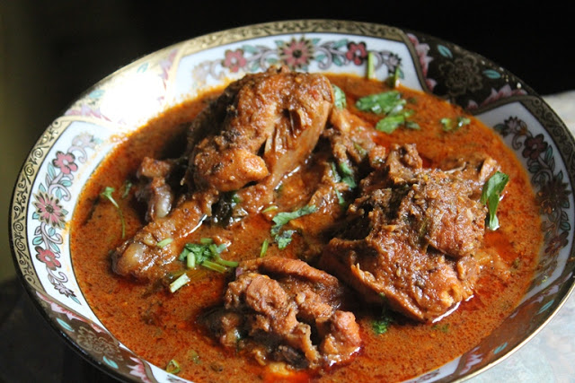

Delicious Kolhapuri Chicken!!

Description
Chicken masala is a very easy and simple recipe. We already have seen the chicken masala recipes. But today we are making few variations in the recipe.
This is Kolhapuri style chicken masala. You can try this recipe at home and drop a comment for me. Do not forget to like, share, and subscribe.
Here are the Ingredients!!
- 500 gm Chicken
- 1/2 tsp Turmeric powder
- 1 tsp Ginger-Garlic paste
- Lemon juice
- 1/2 tsp Salt
- 1 tbsp Coriander seeds
- 1 tsp Cumin seeds
- A piece of Javitri / Mace
- A Cinnamon stick
- A small piece of Star anise
- 3~4 Cloves
- 3~4 Black peppercorns
- 4~5 Garlic cloves
- 1 tsp grated dry Coconut
- 1 tbsp white sesame seeds
- Dried onion
- 4~5 dry Byadgi mirachi
- 2 tsp Oil
- Finely chopped Onion
- 1 finely chopped Tomato
- 1 tsp Besan. Water. Salt
Steps
- Wash FreshToHome chicken really good 3-4 times with water.
Let the chicken be in the strainer for about 10-15 minutes.
Transfer the chicken into a bowl and add turmeric powder, ginger-garlic paste, lemon juice, salt.
- Mix everything well together and rest for about 30 minutes to marinate.
Heat up a pan on medium heat.
Add coriander seeds, cumin seeds, mace, cinnamon, star anise, cloves, black peppercorns, and roast it a little.
- Add garlic cloves, dry coconut, white sesame seeds, fried onion, dry byadgi mirachi, and roast everything well together until spices release aroma.
You can skip the dry onion if you don’t have.
You can skip dry red chilies and use red chili powder instead.
Transfer everything into a blender jar and blend into a fine powder. Masala for chicken is ready.
- Heat up oil in a pan.
Add onion and fry until it gets a light golden color.
Add tomato and fry for another 4-5 minutes until tomato cooks soft.
Add 3-4 tsp fresh blended masala and fry for about 2 minutes.
Move the masala aside and add besan in the oil.
- Fry the besan for about a minute and mix it well with the masala.
Add the marinated chicken and coat it well with the masala.
Add water and mix well.
Add water just enough for gravy as chicken also releases moisture.
Cover and cook for about 20-25 minutes.
- After about 7-8 minutes open the lid and mix the chicken so that it won’t stick to the bottom.
Add salt and mix well.
While adding salt be careful as we have added salt while marinating the chicken too.
Open the lid and mix once at regular intervals.
- After cooking chicken for about 20-25 minutes, chicken masala is all ready.
Garnish with coriander leaves.
Chicken masala goes well with bhakari, roti, naan.
Kolhapuri chicken is all ready.
Back